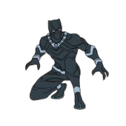
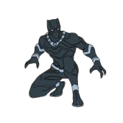
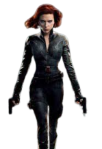

Herói que obtem força sobre-humana, agilidade e resistência aprimoradas. Ele foi criado a partir de um experimento que lhe deu habilidades extraordinárias, transformando-o em um dos maiores guerreiros do universo Marvel. Seu escudo, feito de um material indestrutível, é sua principal ferramenta de combate.
O Capitão América, nos quadrinhos e filmes, desempenhou um papel crucial em várias guerras, incluindo a Segunda Guerra Mundial, onde lutou contra as forças nazistas e o regime de Hydra. Em sua trajetória, ele também participou de batalhas modernas, como nas Guerras dos Vingadores, enfrentando ameaças como Thanos e outros vilões cósmicos.
Vilões
Um cientista e agente nazista que se tornou um dos maiores inimigos do Capitão América. Ele é um mestre da tecnologia, responsável por muitos dos experimentos feitos durante a Segunda Guerra Mundial, e possui uma mente brilhante

Baron Zemo foi passado por várias gerações, mas o mais famoso é Helmut Zemo, que possui uma grande habilidade em manipulação e táticas de guerra. Ele tem uma rivalidade de longa data com o Capitão América, sempre tentando enfraquecer a moral e os aliados de Steve Rogers.
Um dos maiores inimigos do Capitão América, o Red Skull, cujo verdadeiro nome é Johann Schmidt, é um nazista que foi exposto ao "soro do super soldado" (o mesmo que deu poderes a Steve Rogers), mas de forma corrupta
aliados
 

O Pantera Negra é T'Challa, o rei de Wakanda, uma nação africana rica em vibranium. Ele se torna o herói após a morte de seu pai, o rei anterior. T'Challa possui habilidades sobre-humanas devido a uma erva especial e é um excelente lutador.
Sam Wilson, conhecido como Falcon, é um dos aliados mais próximos de Steve Rogers. Ele é um ex-militar e, após se tornar amigo do Capitão América, recebeu uma versão tecnológica de asas para voar e se tornar o Falcon.
